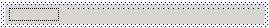
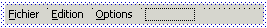
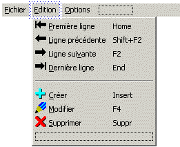

La fenêtre d’édition d’un menu affiche des écrans du type suivant :
Menu vide (état initial après création du menu)

Menu à 3 choix principaux (aucun choix sélectionné)

Choix principaux du menu et sous-menu Edition (choix Edition sélectionné)

Ces écrans comprennent les éléments suivants :
Barre de choix principaux.Les choix principaux du menu sont toujours affichés et sont présentés horizontalement. Un tel choix peut être de type « terminal » ou « tête de sous-menu » mais non « séparateur » ; s’il est de type terminal, il ne peut pas être de nature « Case à cocher » ni « Bouton radio » ; enfin, il ne peut pas afficher d’image bitmap.
Remarque importante : dans Xwin, un menu surgissant est conventionnellement dessiné comme un menu classique n’ayant qu’un unique choix principal. Ce choix fictif (qui n’apparaîtra pas à l’exécution) doit être « en-tête de sous-menu » et c’est son sous-menu qui sera affiché dans la fenêtre popup.
Sous-menu(s).Les choix d’un sous-menu sont affichés lorsque vous sélectionnez leur choix « père » et sont présentés verticalement. Un tel choix peut être « terminal », « tête de sous-menu » ou « séparateur » ; s’il est de type terminal, il peut être de nature « normal », « Case à cocher » ou « Bouton radio » et afficher une image bitmap en supplément du texte.
L’exemple ne montre qu’un niveau de sous-menu mais sachez que le nombre de niveaux n’est pas limité. Vous pouvez « ouvrir » plusieurs sous-menus d’une même branche en cascade, en sélectionnant les choix « père » successifs : dans ce cas, vous visualisez simultanément tous les choix principaux et tous les choix des sous-menus ouverts.
Rectangle(s) en pointillés noirs.
Le menu principal et chaque sous-menu affichent systématiquement un dernier choix fictif (cadre en pointillés noirs) : ceci permet de créer un choix derrière le dernier choix actuel du menu ou du sous-menu (la touche Insert effectuant la création avant le choix couramment sélectionné).
Cadre(s) en pointillés bleus.
Le ou les choix couramment sélectionnés sont visualisés par un encadrement en pointillés de couleur bleue.